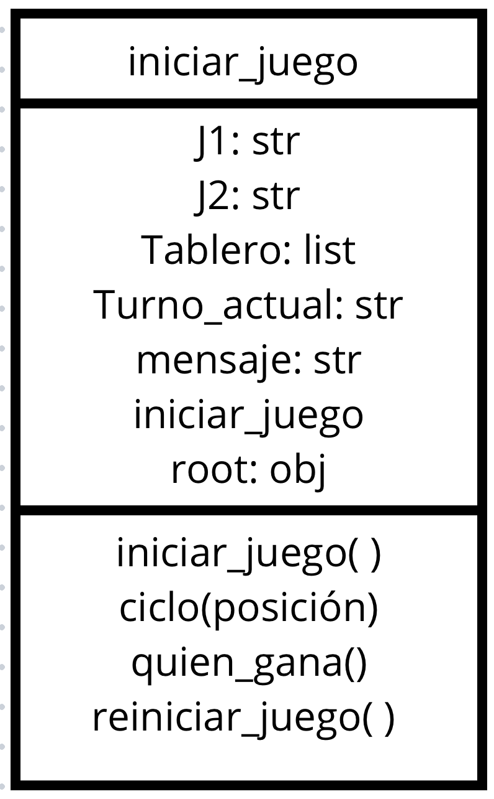

GATOGAME
DISEÑO DEL JUEGO

Clase principal IniciarJuego
Métodos:
__init__(self, root):
- Es el método constructor de la clase que inicializa los atributos y configura el tablero.
- Llama al método
iniciar_juego() para crear el tablero y los botones.
Atributos:
self.J1: Representa el símbolo del Jugador 1. En este caso, es "O".self.J2: Representa el símbolo del Jugador 2. Es "X".self.tablero: Es una lista de 9 elementos, inicializada vacía ([""] * 9), que representa las casillas del tablero de juego.self.turno_actual: Almacena qué jugador tiene el turno en ese momento. Inicialmente es self.J1, es decir, el jugador 1.self.root: Referencia a la ventana principal de la aplicación Tkinter.self.mensaje: Una variable de tipo StringVar que almacena los mensajes que se mostrarán en la interfaz (por ejemplo, para indicar quién ha ganado o si hay un empate).
Desglose del método iniciar_juego(self):
- self.botones = []
- Se inicializa una lista vacía llamada
self.botones para almacenar los botones correspondientes a las casillas del tablero.
- Esta lista se utilizará más tarde para hacer referencia a cada botón, lo que permitirá actualizar su texto y estado.
for i in range(9):
- Este bucle
for itera 9 veces (del 0 al 8), ya que el tablero tiene 9 casillas en total (3 filas por 3 columnas).
- La variable
i representa el índice de cada casilla/botón del tablero.
boton = Button(self.root, text="", width=10, height=3, command=lambda i=i: self.ciclo(i))
- Se crea un botón usando el widget
Button de tkinter, que pertenece a la ventana principal (self.root).
text="": El texto del botón se inicializa vacío (ya que la casilla empieza vacía).width=10, height=3: Define el tamaño del botón (ancho y alto en términos de texto).command=lambda i=i: self.ciclo(i): Define qué sucede cuando se hace clic en el botón. En este caso, se utiliza una función lambda que llama al método self.ciclo(i) pasando la posición actual i como argumento. Esto permite que el botón reaccione al clic y ejecute la lógica del turno del juego.
boton.grid(row=i // 3, column=i % 3)
- Se utiliza el método
grid() para colocar el botón en la ventana principal dentro de una cuadrícula de 3x3.
row=i // 3: Calcula en qué fila debe estar el botón. La división entera (//) asegura que los primeros tres botones (índices 0, 1, 2) estén en la fila 0, los siguientes tres (índices 3, 4, 5) en la fila 1, y así sucesivamente.column=i % 3: Calcula en qué columna debe ir el botón. El operador módulo (%) asegura que los botones se coloquen en las columnas correctas, es decir, la primera columna (0), la segunda (1) y la tercera (2).
self.botones.append(boton)
- Agrega cada botón creado a la lista
self.botones. Esto permite que más tarde se pueda acceder a cada botón individualmente para cambiar su texto, deshabilitarlo, o hacer otras modificaciones.
Label(self.root, textvariable=self.mensaje).grid(row=3, column=1)
- Crea una etiqueta (
Label) que mostrará los mensajes durante el juego (por ejemplo, quién ha ganado o si hay empate).
textvariable=self.mensaje: Se vincula la variable self.mensaje a la etiqueta, de modo que cualquier cambio en self.mensaje automáticamente actualice el texto que se muestra en la interfaz.grid(row=3, column=1): Coloca la etiqueta en la fila 3, columna 1, justo debajo del tablero de botones, ya que el tablero utiliza las filas 0 a 2.
Desglose del método ciclo(self, posicion):
if self.tablero[posicion] == "":
- Este
if comprueba si la casilla seleccionada está vacía (es decir, no tiene ya un símbolo de jugador).
- Objetivo: Asegurarse de que el jugador no pueda colocar su símbolo en una casilla que ya ha sido ocupada.
self.tablero[posicion] = self.turno_actual
- Se actualiza la lista
self.tablero en la posición seleccionada con el símbolo del jugador actual (ya sea "O" o "X").
- Objetivo: Registrar en la estructura lógica del tablero que el jugador ha ocupado esta casilla.
self.botones[posicion].config(text=self.turno_actual)
- Se actualiza el texto del botón en la interfaz gráfica, colocando el símbolo del jugador actual en la casilla correspondiente.
- Objetivo: Mostrar visualmente el movimiento en el tablero.
if self.quien_gana():
- Llama al método
quien_gana() para verificar si, después de este movimiento, el jugador actual ha ganado el juego.
- Objetivo: Comprobar si el jugador ha completado una combinación ganadora.
self.mensaje.set(f"¡{self.turno_actual} ha ganado!")
- Si hay un ganador, se actualiza el mensaje en la interfaz gráfica para indicar que el jugador actual ha ganado.
- Objetivo: Informar al usuario sobre el ganador.
self.root.after(2000, self.reiniciar_juego)
- Después de 2 segundos (2000 milisegundos), se llama al método
reiniciar_juego() para reiniciar la partida.
- Objetivo: Permitir que el jugador vea el resultado antes de que el tablero se reinicie.
elif all(self.tablero):
- Verifica si todas las casillas del tablero están llenas, lo que significaría un empate si no se ha declarado un ganador.
- Objetivo: Detectar si el tablero está completo y no hay más movimientos posibles.
self.mensaje.set("¡Empate!")
- Si todas las casillas están llenas y no hay ganador, se actualiza el mensaje para indicar que el juego ha terminado en empate.
- Objetivo: Notificar a los jugadores del empate.
self.root.after(2000, self.reiniciar_juego)
- Al igual que en el caso de un ganador, el juego se reinicia después de 2 segundos si ha habido un empate.
- Objetivo: Permitir que el jugador vea el resultado antes de que el tablero se reinicie.
else: self.turno_actual = self.J2 if self.turno_actual == self.J1 else self.J1
- Si no hay ganador y no hay empate, se cambia el turno al siguiente jugador.
- Objetivo: Alternar el turno entre los jugadores 1 y 2, asegurando que el juego continúe hasta que haya un ganador o un empate.
Desglose del método quien_gana(self):
combinaciones = [[0, 1, 2], [3, 4, 5], [6, 7, 8], [0, 3, 6], [1, 4, 7], [2, 5, 8], [0, 4, 8], [2, 4, 6]]
- Se define una lista de listas, donde cada lista interna contiene una combinación de índices que representan una fila, columna o diagonal ganadora en el tablero.
- Objetivo: Definir todas las combinaciones posibles que darían lugar a una victoria en el juego (filas, columnas y diagonales).
for combinacion in combinaciones:
- Descripción General: Este bucle recorre cada una de las combinaciones de índices definidas en la lista
combinaciones.
- Desglose Detallado:
combinacion: Es una variable que representa cada lista individual dentro de la lista combinaciones. Cada lista de combinaciones contiene tres índices que corresponden a una fila, columna o diagonal en el tablero.- Iteración: En cada iteración del bucle, la variable
combinacion toma el valor de una de las listas internas. Por ejemplo, en la primera iteración, combinacion será [0, 1, 2], en la segunda iteración será [3, 4, 5], y así sucesivamente.
- Objetivo: Evaluar si la combinación actual de índices representa una línea ganadora en el tablero.
if self.tablero[combinacion[0]] == self.tablero[combinacion[1]] == self.tablero[combinacion[2]] != "":
- Descripción General: Esta línea verifica si los tres elementos del tablero que corresponden a una combinación específica son iguales y no están vacíos.
- Desglose Detallado:
self.tablero[combinacion[0]]: Accede al valor en la posición del tablero especificada por el primer índice de la combinación actual.self.tablero[combinacion[1]]: Accede al valor en la posición del tablero especificada por el segundo índice de la combinación actual.self.tablero[combinacion[2]]: Accede al valor en la posición del tablero especificada por el tercer índice de la combinación actual.- Comparaciones:
self.tablero[combinacion[0]] == self.tablero[combinacion[1]]: Compara el valor en la primera posición de la combinación con el valor en la segunda posición. Esta comparación verifica si ambos valores son iguales.self.tablero[combinacion[1]] == self.tablero[combinacion[2]]: Compara el valor en la segunda posición de la combinación con el valor en la tercera posición. Esta comparación verifica si ambos valores son iguales.self.tablero[combinacion[2]] != "": Verifica que el valor en la tercera posición no esté vacío (o sea, no sea una cadena vacía). Esto asegura que la combinación está completa con un símbolo y no está vacía.
- Objetivo: Asegurarse de que todos los tres valores en la combinación actual sean iguales y que no estén vacíos, lo que indica que un jugador ha logrado una línea completa con el mismo símbolo.
return True
- Si se cumple la condición anterior, el método devuelve
True, lo que indica que hay un ganador.
- Objetivo: Señalar que alguien ha ganado y el juego debe terminar.
return False
- Si ninguna combinación ganadora se ha cumplido, el método retorna
False.
- Objetivo: Indicar que no hay ganador en el estado actual del tablero.
Desglose del método reiniciar_juego(self):
self.tablero = [""] * 9
- Se reinicia la lista
self.tablero, estableciendo 9 posiciones vacías.
- Objetivo: Limpiar el tablero lógico para comenzar una nueva partida.
self.turno_actual = self.J1
- Se reinicia el turno para que el jugador 1 (generalmente "X") comience nuevamente.
- Objetivo: Asegurar que el jugador 1 empiece siempre cuando el juego se reinicie.
self.mensaje.set("")
- Se limpia cualquier mensaje previo (como mensajes de victoria o empate) que aparezca en la interfaz gráfica.
- Objetivo: Restablecer la interfaz para que no muestre mensajes de la partida anterior.
for boton in self.botones:
- Se itera sobre cada botón en la lista
self.botones.
- Descripción: Permite aplicar configuraciones a cada botón en la interfaz gráfica del usuario.
- Objetivo: Restablecer todos los botones en la interfaz de usuario a su estado inicial.
boton.config(text="", state=NORMAL)
- Descripción: Se configura cada botón para que su texto esté vacío y su estado sea
NORMAL.
- Objetivo: Reiniciar el texto en los botones (es decir, borrar cualquier texto que represente los movimientos previos) y habilitar los botones para que puedan ser usados nuevamente.